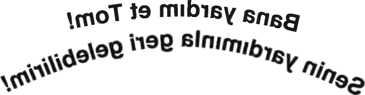

AYNADAKİ KELİMELER
Ertesi gün çok geçmeden sert bir kayaya rast geldik, daha derine inemedik. Çukurun amacımız için yeterince derin olduğunu umuyordum. Akşamüzeri geç vakit kazma işini bitirmek üzereyken Grimalkin geldi yanımıza. Omzundaki çuvalda bir şey taşıyordu. Bunlar yaptığı mızraklar olsa gerekti.
"Bu yeterli olacak mı?" diye sordu şüpheli gözlerle çukura bakarak.
"Umarım. Daha derin kazacaktım ama bir kayaya tosladık," dedim.
Grimalkin endişeli görünüyordu. "Şeytan'ı bundan çok daha büyük gördüğüm zamanlar oldu. Tam bir dev, hatta canavardı."
"Eğer o kadar büyükse yapabileceğimiz bir şey olmayabilir," dedim.
"Çocuğunu dünyaya getirdiğimi unutma; öldürdüğü çocuğunu," dedi Grimalkin. "Ben istemediğim sürece yanıma gelemez. En son savunmamız bu olabilir."
Gülümseyerek iğne gibi sivri dişlerini gösterdi. "Hem belki de bu kaya tabakası işimize yarar. Mızrak ve bazı ufak çiviler yaptım. Kaya, sağlam bir temel oluşturacaktır."
"Eh," dedi Hayalet, "artık hazırız. Olabileceğimiz kadar hazır... Şimdi dinlenip bu geceki karşılaşma için güç toplayabiliriz."
Grimalkin başını iki yana salladı. "Hayır, öncesinde yapılacak başka işler var," dedi. Eğilip sırtındaki çuvalı yere indirerek içinden mızrak ve çivileri çıkardı. İçlerinde tek bir gümüş alaşımı dahi yoktu. Tümü saf çelikten yapılmışa benziyordu.
"Çelikle kaynatmak için gümüşe ihtiyacım var," dedi.
Başka çarem olmadığını biliyordum. Gümüş zincirimi vermek zorunda kalacaktım. Gümüş zincir, bir hayalet için çok önemliydi, üstelik annemin hediyesiydi. Ama Şeytan, ancak bu şekilde bağlanabilirdi.
"Bunu kullanabilirsin," diyerek zinciri ona uzattım.
Hayalet kaşlarını çattı. "Hayır evlat, günün birinde ona yine ihtiyacın olacak. Benimkini kullanacağız. Daha iyi ne işe yarayabilir ki? Hem eski ustam Henry Horrocks'un zinciri, öldüğünde bana miras kalmıştı. Adlington'da kardeşim Andrew'in çilingir dükkânında. Günün birinde Eyalet'e dönebildiğimizde gidip oradan alabiliriz."
Konuşurken yüzünden üzgün olduğu anlaşılabiliyordu. Bu zincir yıllarca ona hizmet etmişti. Şimdi ondan vazgeçmek çok zordu.
Grimalkin'in silahları istediği şekilde hazırlaması neredeyse iki gün sürdü. Evin arkasındaki demir ocağından durmaksızın ritmik çekiç sesleri geliyordu. Ustamın gümüş zincirini erittikten sonra ince şeritler haline getirerek her birini ustalıklı bir şekilde mızrak ve çivilerle kaynattı.
İkinci gün akşamüzeri Shey'in hizmetkârlarından biri Grimalkin'in benimle yalnız konuşmak istediği haberini getirdi. Çalıştığı demir ocağının bulunduğu kulübeye girdim. Dikkatini dağıtmaktan korktuğum için konuşmadan bir köşede öylece durup mızrak yapışını izledim. Ellerini demir ve gümüşten korumak için kalın deri eldivenler giymişti. Elindeki uzun ve keskin mızrağı gümüş ve demir alaşımlı ince bir sarmal haline getiriyordu. Bu tip dört uzun mızrağın sonuncusu üzerinde çalışıyordu; çivilerse tamamlanmıştı bile.
En sonunda tatmin olunca silahı örsün yakınındaki tezgâha koyup bana döndü ve göz göze geldik.
"Dinle," derken gözleri demir ocağından yansıyan ışıkla kıpkırmızı parlıyordu. "Onu bu gece bağlayacağız; her ne pahasına olursa olsun. Gerekirse bunu yapabilmek için canımı vermeye hazırım."
Başımı salladım. "Korkarım Şeytan çukurda olduğunu anlar anlamaz zamanı durduracak. Ve ben ona engel olabilecek kadar güçlü olmayacağım, ama bunu denerken ölmeye razıyım," dedim
Kaşlarını çattı. "Şeytan ve onun sahip olduğu güçler hakkında ara ara düşünürüm. Geçmişte zamanı durdurduğunda inisiyatif ondaydı. O yüzden savunmada kalıp buna engel olmaya çalışmak yerine neden o belirir belirmez zamanı sen durdurmuyorsun?"
"Bunu daha önce birkaç kez yapabildim, ama etkisi uzun sürmedi. Yine de elimden geleni yaparım," dedim.
"Başarırsan çukurun etrafındaki herkes için zaman durur. Sen hariç... Şeytan bu durumu anlar ama o zamana kadar mızrağını çoktan o iğrenç bedenine saplamış olursun."
Başımı salladım. İşe yarayabilirdi. Grimalkin haklıydı. Bu kez inisiyatifi ele alıp saldırıya önce ben geçecektim.
Hava kararmadan önce birkaç saat uyuyabilmek için elimizden geleni yaptık. Bizi bekleyen görev için güçlü ve tetikte olmamız gerekiyordu. Üstümü değişmekle uğraşmadım. Yine de cebimdeki kan kabını kontrol ettim; Şeytan'ı hâlâ uzak tutabiliyordu. Sonra yatağa uzanıp gözlerimi kapadım.
Çok geçmeden rüyasız bir uykuya daldım, fakat tuhaf bir şey hissedince titreyerek uyandım.
Yatağın yanındaki ayna titriyordu. Bir yüz belirdi. Bu Alice'ti! Gözleri dehşet içinde belermişti. Onu bu şekilde görmek yüreğimi burkuyordu.
Ayna buğulandı. Kullandığı aynanın yüzeyine hohlamış olmalıydı. Yazmaya başladı ve mesajı aynanın yüzeyinde belirdi:

Harfler aynanın yüzeyinde ters beliriyordu: Bana yardım et Tom! Senin yardımınla geri gelebilirim.
Gerçekten Karanlık'tan kurtulabilir mi? diye düşündüm. İçim bir anda umutla doldu. Hızla hohlayıp buğulanan aynanın yüzeyine kendi mesajımı yazdım:
Nasıl yardım edebilirim?
Alice yine yazmaya başladı fakat kelimeler çok yavaş beliriyordu. Acı mı çekiyordu? Sorun neydi?
.uldub uloy şıkıç rib nadakra naP
.memeçeg amışab ket amA
.moT rav mıcayithi anaS
Bu kez daha rahat ve onun yazmasından daha kısa bir sürede okuyabildim: Pan arkadan bir çıkış yolu buldu. Ama tek başıma geçemem. Sana ihtiyacım var Tom.
Gerçekten de dünyamıza açılan bir kapı olabilir miydi? Pan ona büyücüler konusunda yardım etmemin karşılığında Alice'e yardım ediyor olmalıydı. Ama daha önce yardım edemeyeceğini, Şeytan'ın çok güçlü olduğunu söylemişti. Hem ayna kullanarak Karanlık'tan iletişim kurmak nasıl mümkün olabiliyor? diye düşündüm. Mesajları yazması bu yüzden mi çok uzun sürüyordu! Hızla yeniden hohlayıp bir mesaj daha yazdım:
Kapı nerede Alice?
Yanıtı bu kez daha hızlı geldi:
.ednini nınahredjE
Ejderhanın ininde mi? Şeytan'ı bağlamayı umduğumuz yerde daire şeklinde dizilmiş dikilitaşlar için Hayalet de bu tabiri kullanmıştı.
Kenmare'deki dikilitaşları mı kast ediyorsun?
Ayna titreyip karardı. Kendimi berbat hissediyordum. Alice'ten en can alıcı bilgiyi alamadan aramızdaki iletişim kesilmişti. Fakat tam umutsuzluğa kapılmak üzereyken ayna bir kez daha parladı ve Alice yavaş yavaş yazmaya başladı:
.leg zınlaY .eramneK ,tevE
...zamça ıyıpak eyesmik akşab nednes naP
Yalnız gelmemi istiyordu. Bu çok mantıklıydı. Grimalkin, Pan'ın annem sayesinde benimle iş birliği yaptığını söylemişti Hayalet'e. Tek başıma gitmem tehlikeliydi, fakat böyle olması gerekiyorsa başka çarem yoktu.
Perdeleri açıp pencereden dışarı baktım. Dışarısı alaca karanlıktı; çok geçmeden karanlık iyice çökecekti. Yan odadan Hayalet'in sesini duyabiliyordum. Çantamdaki keseleri alarak ceplerimi tuz ve demirle doldurdum. Sonra gümüş zincirimi alıp belime dolayarak gömleğimin altına soktum.
Botlarım bir elimde, asam diğer elimde parmak ucunda ilerleyerek kapıdan geçip kimseyle karşılaşmadan alt kata inmeyi başardım. Hizmetkârlardan biri botlarımı giyerken beni gördü. Selamına karşılık verdikten sonra patika boyunca koşarak ana kapıdan dışarı çıktım.
Shey'in muhafızlarını göremiyordum, genellikle ortalıkta dolaşmıyorlardı zaten. Muhtemelen ağaçların arasından beni izliyorlardı ama artık bunun önemi yoktu. Dikilitaşların orada yapmayı planladıklarımız hakkında korkuya kapılmamalarını sağlayacak kadar bilgileri vardı. Bunun büyücülerin karanlık güçleriyle mücadele edebilmemizi sağlayacak bir ayin olduğunu düşünüyorlardı. O yöne ilerlediğimi görünce diğerlerinden önce yola koyulduğumu sanmış olmalılardı.
Çok geçmeden ağaçların arasında ilerleyerek taşlık alana, yani ejderhanın inine yaklaştım. Yumuşak zeminde ilerlerken ara sıra bir dala basıyordum. Sis çökmüştü ama hâlâ bir ağaca toslamadan, bir ağaç kütüğüne takılmadan yürümemi sağlayacak kadar önümü görebiliyordum. Tepenin eteklerine gelince başımı kaldırıp bulutsuz gökte açık bir şekilde seçilebilen kayalara baktım. En parlak yıldızlar gökte belirmişti, fakat ayın doğmasına daha birkaç saat vardı.
Kalbim yerinden fırlayacakmış gibi çarpıyordu. Alice'i geri getirmeyi başarabilecek miydim?